ggplot(data = MyData, aes(x = Variable, y = AnotherVariable)) +
geom_point() # example: draw points for two numeric variables
#---note there are endless types of geoms! But the most common for beginners are:
# geom_bar()
# geom_histogram()
# geom_line()
# geom_point()10 Plotting in R: ggplot2 Package
A beginner-friendly guide to building and improving graphs
GEOMS · AESTHETICS · DATA VISUALIZATION
Make Data Visible
Graphs turn columns of numbers into patterns readers can see. Explore the layered grammar of ggplot2, build bar charts, and improve your figures with clear labels, colors, themes, and facets.
NoteLearning objectives
By the end of this lesson, you should be able to:
- Identify the data, aesthetic mappings, and geom layers in a
ggplot2graph. - Create bar charts showing counts and percentages.
- Add titles, axis labels, colors, and themes.
- Compare groups with stacked, side-by-side, and faceted charts.
- Create and interpret histograms for continuous variables.
10.1 Introduction
This may be the time where you finally say, “I see why people use R!” At least, that is my hope. Besides being free and open source - the reason people generally switch to R is to take advantage of its powerful graphics. I will do my best to walk you through this. There are free books, tutorials, and countless help pages on the web to help you figure out any task you need to do with ggplot. One exceptional book can be found here. This is another great resource for beginners.
base R plotting: R is primed to do all sorts of plots using the base plotting system. This is the default plotting system that comes with R. It is fairly easy to use, but it can be a bit clunky when you want to do more complex plots. Both systems can produce publication-quality graphics; this lesson focuses on ggplot2. I will skip showing you base R plotting for now, but if you want to learn more about it, check out this tutorial.
10.2 Why ggplot2?
ggplot2 is an R package dedicated to data visualization using the ‘grammar of graphics’. It allows you to build just about any type of chart, figure or graph you can imagine. If you don’t believe me, check out the R graph gallery
10.2.1 How it works
In order to create a graph or chart, you need to start by creating a ggplot() canvas to draw on. Each plot must have these three key components:
- Data to be visualized
- Aesthetic mappings, this is known as the
aes()function - Layer(s) which tell it what to draw. These are typically some sort of geom function, such as
geom_bar(),geom_line(), orgeom_point()
It will look something like this every single time:
TipLayer order matters
Order matters! The plot syntax is read from top to bottom, so what comes first may be overwritten by what follows. Keep this in mind as you add more layers to your plots.
10.2.2 Calling in some data
For our plots, we will use the food.csv dataset from the previous lesson. Let’s start by calling in the food data.
# Load packages before using their functions
library(tidyverse)
# Keep food.csv in the same folder as this lecture
food <- read.csv("data/food.csv", stringsAsFactors = TRUE)Let’s take a quick look at the data:
#---Take a look at the data---#
glimpse(food)Rows: 613
Columns: 9
$ consent <fct> Yes, Yes, Yes, Yes, Yes, Yes, Yes, Yes, Yes, Yes,…
$ age_group <fct> 60+, 36-40, 36-40, 60+, 18-25, 26-35, 26-35, 26-3…
$ biological_sex <fct> Female, Female, Male, Male, Male, Female, Female,…
$ education <fct> Primary School, Primary School, Primary School, P…
$ food_availability <fct> Rarely had enough food, Rarely had enough food, S…
$ food_variety <fct> Very Good, Very Good, Okay, Okay, Okay, Very Poor…
$ food_quantity <fct> Often not enough to eat, Enough to eat, Sometimes…
$ avg_meals_per_day <int> 4, 4, 2, 4, 3, 3, 3, 2, 1, 3, 2, 4, 3, 3, 3, 4, 2…
$ avg_calories_per_day <int> 1913, 2503, 2148, 1955, 1614, 2390, 1206, 3203, 1…For the next few examples, we will use the age_group variable from the food dataset. This is a categorical (factor) variable.
10.2.3 Bar Charts
Let’s build our first ggplot. We will start with a bar chart.
# ggplot2 was loaded with tidyverse above
# If needed, first run: install.packages("tidyverse")
###########################
#---Classical Bar Chart---#
###########################
# base plot
ggplot(data=food, aes(x=age_group))+
geom_bar()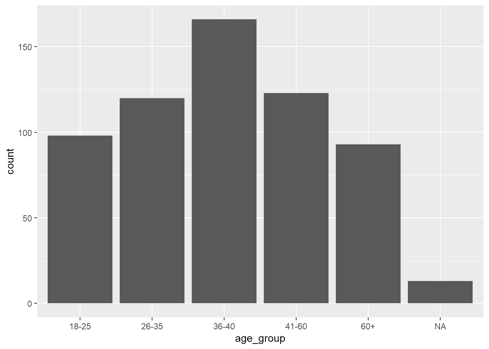
What do you see? Notice the NA column? This is because there are some missing values in the age_group variable. ggplot automatically creates a bar for missing values. If you want to remove this, you can filter them out of the data before plotting. We learned how to do this in our last tutorial.
# remove missing values from age_group
age_food = food %>%
filter(!is.na(age_group)) # keep only rows where age_group is NOT missing
# plot without missing values
ggplot(data=age_food, aes(x=age_group))+
geom_bar()10.2.4 Counts vs. Percentages
So far so good, but notice the y-axis. By default, we are seeing counts. That is fine, but it is much more useful to supply percentages. We can do this by calculating the percentages first, then plotting them. To do this, we are going to tap into our skills using the tidyverse package.
Our goal is to make a “data preparation table” that has the counts and percentages of each age group. We can then plot this new table with one tweak of our ggplot code. To summarize the data, we are going to first group our data by age_group, we then count up how many are in each group with the summarise() function. Finally, we calculate the percentages using the mutate() function - where we will sum the total counts across all age groups, then divide each count by that total and multiply by 100 to yield a percentage.
# create a summary table with counts and percentages
age_food_tbl = age_food %>%
group_by(age_group) %>%
summarise(counts = n()) %>%
mutate(perc = counts / sum(counts) * 100) # calculate percentages
#View our results
age_food_tbl# A tibble: 5 × 3
age_group counts perc
<fct> <int> <dbl>
1 18-25 98 16.3
2 26-35 120 20
3 36-40 166 27.7
4 41-60 123 20.5
5 60+ 93 15.5Now that we have our summary table, we can plot it. We will make two changes to make our ggplot code. First, we will specify the y aesthetic inside the aes() function. We will set y=perc (or whatever you would have called your newly calculated percentages) to plot percentages instead of counts. Second, we will use the geom_col() layer instead of geom_bar().
Look at the y-axis. It now shows percentages instead of counts. The relative bar heights are unchanged because every count was divided by the same total. Percentages can be easier to compare across datasets with different sample sizes.
# plot the percentages
ggplot(data=age_food_tbl, aes(x=age_group, y=perc))+
geom_col() # geom_col() uses the y values we already calculated
There are lots of places to go for help for bar charts, here are some I use a fair amount when I forget what to do:
- STHDA Bar Charts <- one of my favorite
Rhelp sites - R Graph Gallery
10.3 Enhancing Bar Charts
For the next part of this tutorial, I will show you how to enhance bar charts. The principles and syntax are the same for the other geom types as well.
To enhance your graphs, you just keep adding layers to your code with the + sign. This will allow you to add titles, change colors, change axis labels, and much more. If you can dream it, it can be altered within ggplot2. I will show you a few common examples, and then make one over the top bar chart at the end.
Let’s return to our bar chart from above, the one that shows percentages of age groups. Here is the base code again:
ggplot(data=age_food_tbl, aes(x=age_group, y=perc))+
geom_col() 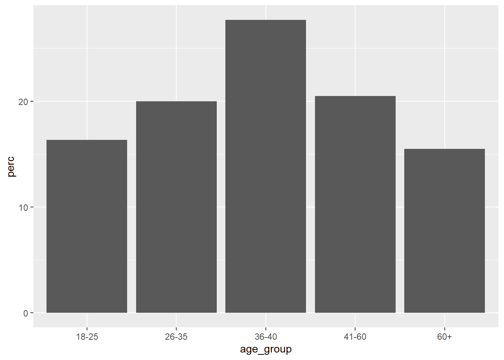
10.3.1 Titles & Axis Labels
Adding a title and axis labels Here I use the labs() function. I am continuing the plot by adding a + sign at the end of the previous line. This tells ggplot that we are adding more to the plot. I then specify the things I want to change, starting with the title, then the y axis label, and finally the x axis label.
ggplot(data=age_food_tbl, aes(x=age_group, y=perc))+
geom_col() +
labs(title= "Age Group Distribution", # adds a title,
y = "Percentage (%)", # adds a new y axis label
x = "Age Group") # adds a new x axis label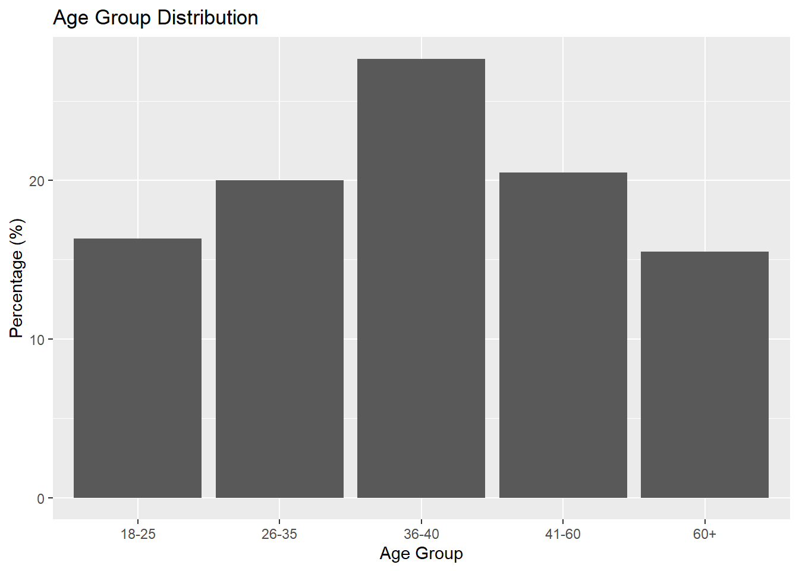
10.3.2 Adding Color
Changing color There are way too many colors to list here. But let’s have some fun anyways. There are the built in R colors which you can call by name: R colors. You can also use hexadecimal color codes if you want to get really fancy. Here is a site that will help you find hex codes: HTML Color Codes. There are also many packages such as RColorBrewer that can help you pick colors. Here is a great resource for using RColorBrewer: RColorBrewer Colors.
This will list out the names you can call from base R. Note that this doesn’t print out here, but will if you enter and run this code within RStudio
colors()Let’s add some color to our bar chart:
- Note that the
color="ColorName"andfill="ColorName"are arguments inside of thegeom_col()function - I also add the
linewidth=1argument so you can see the border easier
ggplot(data=age_food_tbl, aes(x=age_group, y=perc))+
geom_col( color="steelblue", fill="aquamarine2", linewidth=1) +
labs(title= "Age Group Distribution",
y = "Percentage (%)",
x = "Age Group") 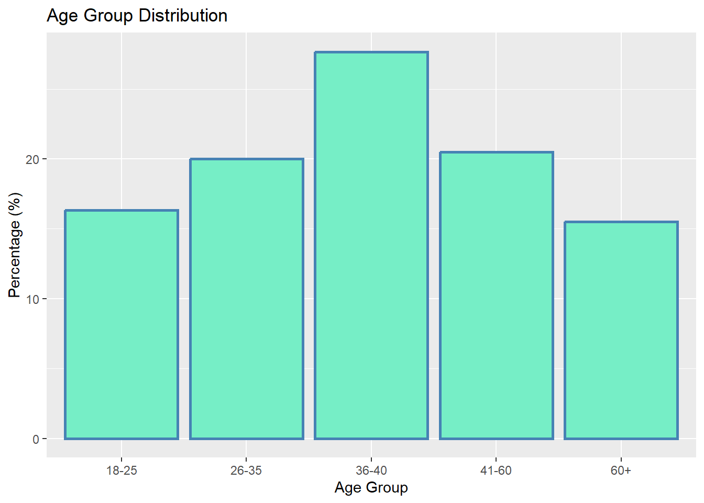
10.3.3 More Bar Chart Options
10.3.3.1 Horizontal Chart
Turn it into a horizontal bar chart:
- add the
coord_flip()function at the end of your code chunk
# Make it a Horizontal barchart
ggplot(data=age_food_tbl, aes(x=age_group, y=perc))+
geom_col( color="steelblue", fill="aquamarine2", linewidth=1) +
coord_flip() # flips the x and the y axes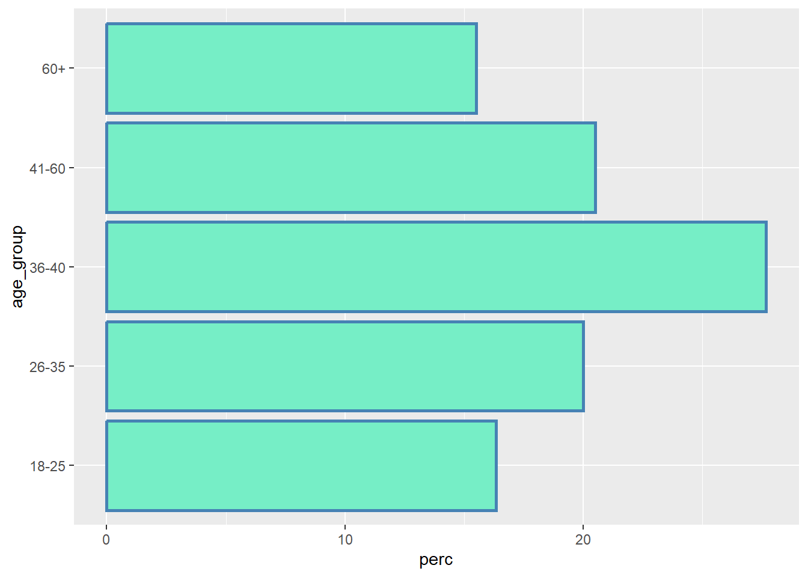
10.3.3.2 Stacked Bar Chart
Make a stacked bar chart:
To do this, we need to go back and re-calculate our percentages by age_group for each level of biological_sex. Then we feed it to ggplot2 as before, but this time we add the fill= argument inside the aes() function. This tells ggplot to stack the bars by the levels of the biological_sex variable.
# Keep only rows with a recorded biological_sex for group comparisons
age_sex_food <- age_food %>%
filter(!is.na(biological_sex))
# Percent within each age group: the stacked bars total 100%
age_sex_food_tbl <- age_sex_food %>%
count(age_group, biological_sex, name = "counts") %>%
group_by(age_group) %>%
mutate(perc = counts / sum(counts) * 100) %>%
ungroup()
# For a different question (age distribution within each sex),
# divide by the total within each biological_sex group instead.
age_within_sex_tbl <- age_sex_food %>%
count(biological_sex, age_group, name = "counts") %>%
group_by(biological_sex) %>%
mutate(perc = counts / sum(counts) * 100) %>%
ungroup()
#View our results
age_sex_food_tbl# A tibble: 10 × 4
age_group biological_sex counts perc
<fct> <fct> <int> <dbl>
1 18-25 Female 56 57.1
2 18-25 Male 42 42.9
3 26-35 Female 72 60
4 26-35 Male 48 40
5 36-40 Female 97 58.4
6 36-40 Male 69 41.6
7 41-60 Female 72 58.5
8 41-60 Male 51 41.5
9 60+ Female 59 63.4
10 60+ Male 34 36.6Now we can plot it. Each stacked bar totals 100%, showing the biological-sex composition within each age group. This is different from asking what percentage of each biological-sex group belongs to each age category.
ImportantAlways check the denominator
For stacked bars, we calculated percentages within age group. For the side-by-side and faceted examples below, we will use age_within_sex_tbl, which calculates percentages within biological sex. The question determines the denominator.
Now we can plot it:
# Make it a Stacked Bar chart. Need a grouping variable for this!
ggplot(data=age_sex_food_tbl,
aes(x=age_group, y=perc, fill=biological_sex))+ # add fill=VariableName
geom_col()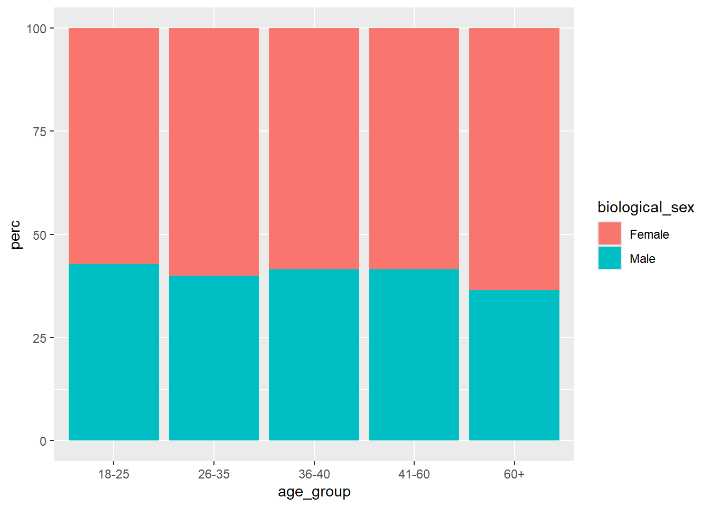
10.3.3.3 Side-by-Side Bar Chart
Make a side-by-side (grouped) bar chart. Here, percentages describe the age distribution within each biological-sex group. Add position = position_dodge() inside geom_col() to put bars next to one another.
# Bar chart with groups (side-by-side)
ggplot(data=age_within_sex_tbl,
aes(x=age_group, y=perc, fill=biological_sex))+
geom_col( position=position_dodge()) #places groups (from fill=VariableName) side by side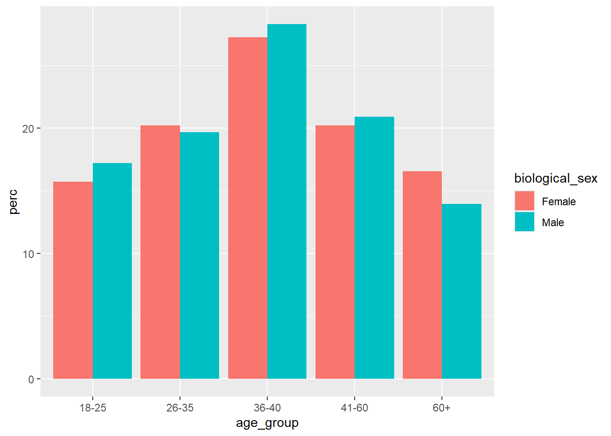
10.4 Built-in ggplot themes
We can now leverage some built in themes/aesthetics that will make our plots look really nice with just one line of code. We will use built-in theme functions such as theme_classic() or theme_bw() to change the overall appearance. The separate theme() function lets us adjust individual elements. Like before, we just add a + sign at the end of our previous line to tell ggplot we are adding more to the plot. We then call the theme we want to use.
Here are some of the more common themes that load with ggplot2:
theme_grey()theme_bw()theme_linedraw()theme_light()theme_dark()theme_minimal()theme_classic()theme_void()
Here we add the ‘black and white’ theme() by adding + theme_bw() at the end of our code chunk.
#######################
#---Built in themes---#
#######################
ggplot(data=age_food_tbl, aes(x=age_group, y=perc))+
geom_col( color="steelblue", fill="aquamarine2", linewidth=1) +
labs(title= "Age Group Distribution",
y = "Percentage (%)",
x = "Age Group") +
theme_bw()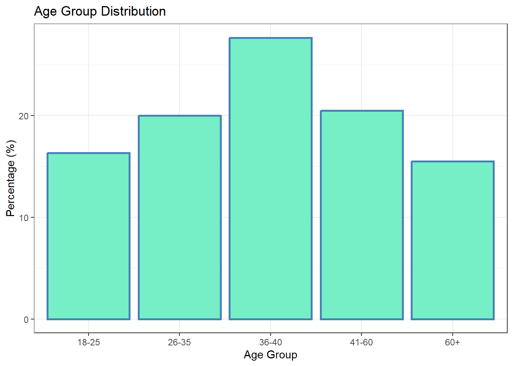
10.4.1 ggthemes: More(!) themes
Really? More themes? Really! More themes! Here are some of my favorites:
theme_fivethirtyeight()(fromggthemes)theme_economist()theme_excel_new()theme_foundation()theme_tufte()theme_hc()
You can find a long list of themes here
Here is Nate Silver’s FiveThirtyEight theme:
#####################
#--- More themes ---#
#####################
#install.packages("ggthemes")
library(ggthemes)
#---more than you bargained for...
# browseURL("https://yutannihilation.github.io/allYourFigureAreBelongToUs/ggthemes/")
ggplot(data=age_food_tbl, aes(x=age_group, y=perc))+
geom_col(color="steelblue", fill="aquamarine2", linewidth=1) +
labs(title= "Age Group Distribution",
y = "Percentage (%)",
x = "Age Group") +
theme_fivethirtyeight()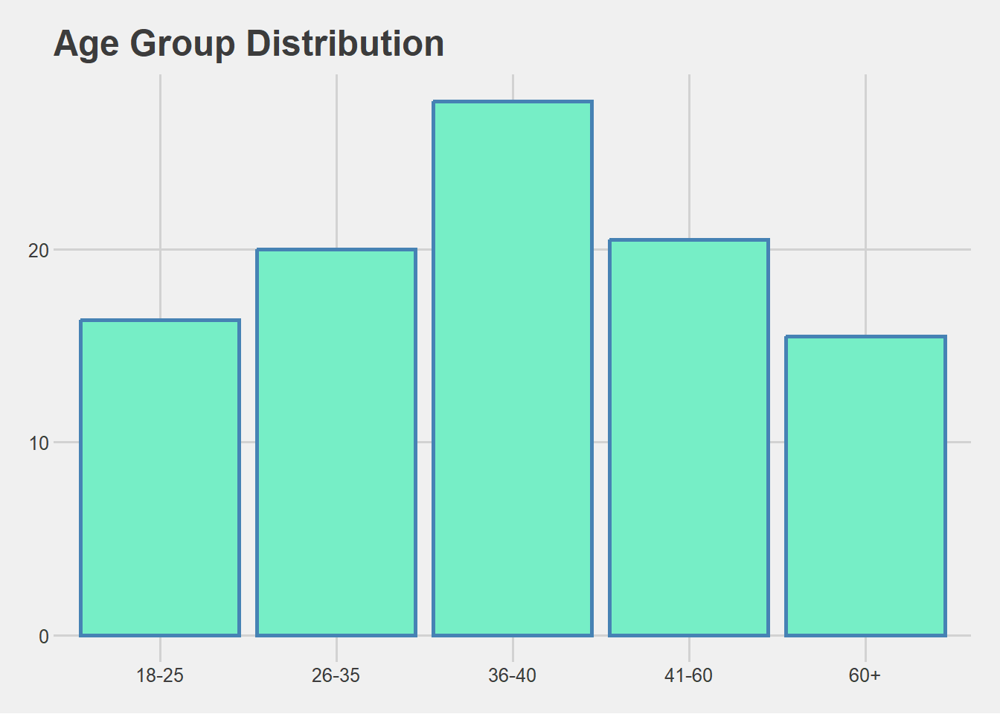
10.5 Facet Plots
You can also create facet plots. These are plots that are split up by a grouping variable. This is a great way to compare distributions across groups. There are two main types of facet plots: facet_grid() and facet_wrap(). The difference is that facet_grid() organizes panels into specified rows or columns; facet_wrap() automatically wraps panels across rows as needed. I will show you how to use facet_grid().
You can put the graphs on top of each other using facet_grid(). Note the syntax within the function is VariableName ~ . to stack them vertically. If you wanted to stack them horizontally, you would use . ~ VariableName (next example shows this).
Vertically arranged panels:
###################
#---Facet Plots---#
###################
# facet_grid can arrange panels in rows or columns
#---- syntax looks like this:
# facet_grid(VariableName ~ .)
# Bar chart with facet_grid (vertical panels)
ggplot(data=age_within_sex_tbl, aes(x=age_group, y=perc, fill=biological_sex))+
geom_col() +
labs(title= "Age Group Distribution",
y = "Percentage (%)",
x = "Age Group") +
theme_classic() + # messing with the theme
facet_grid(biological_sex ~ .)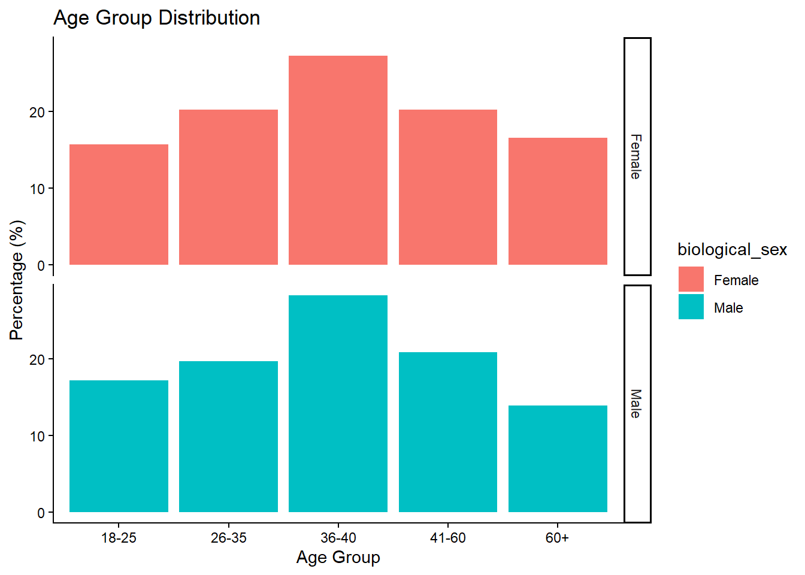
Wrap side-by-side: You can put the graphs side-by-side using facet_grid(. ~ biological_sex). Alternatively, facet_wrap(~ biological_sex) automatically arranges panels to fit the available space.
Horizontally arranged panels:
# facet_grid can arrange panels in rows or columns
#---- syntax looks like this:
# facet_grid(. ~ VariableName)
# Bar chart with facet_grid (horizontal panels)
ggplot(data=age_within_sex_tbl, aes(x=age_group, y=perc, fill=biological_sex))+
geom_col() +
labs(title= "Age Group Distribution",
y = "Percentage (%)",
x = "Age Group") +
theme_classic() + # messing with the theme
facet_grid(. ~ biological_sex)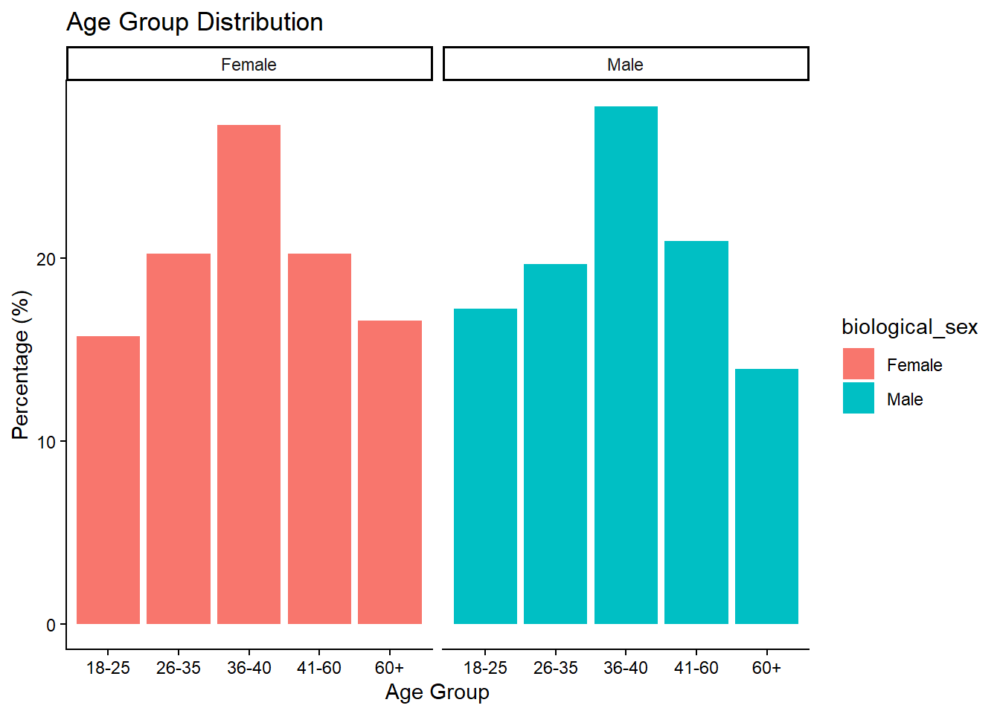
10.6 Other Common Commands
Though this is redundant for Bar graphs, it is important to know how to do these common commands for other types of plots. Here are some of the more common commands you will want to know how to do.
Adding a Legend Here is how to add a legend to your plot. Note that legends are automatically added when you use the fill= or color= arguments inside the aes() function. Here is an example using the age_within_sex_tbl that we created above for the side-by-side stacked bar chart.
# Bar chart with groups (side-by-side)
ggplot(data=age_within_sex_tbl, aes(x=age_group, y=perc, fill=biological_sex))+
geom_col( position=position_dodge())
Moving the Legend You can tell ggplot where to put the legend using arguments within the theme() function. You can specify that the legend go to the “top”, “bottom”, “right” or “left” using the legend.position= argument, like this:
ggplot(data=age_within_sex_tbl, aes(x=age_group, y=perc, fill=biological_sex))+
geom_col( position=position_dodge()) +
theme(legend.position = "top") 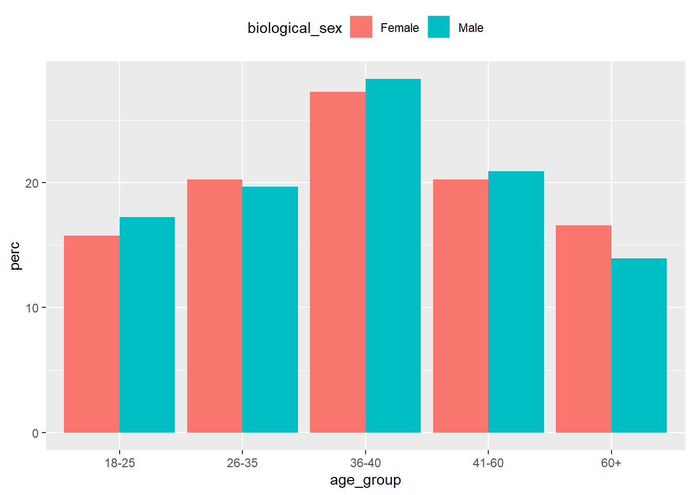
You can also change the legend title. Right now it displays as the variable name. But you can give it a descriptive title by adding the scale_fill_discrete(name="New Legend Title") function to your code chunk, like this:
ggplot(data=age_within_sex_tbl, aes(x=age_group, y=perc, fill=biological_sex))+
geom_col( position=position_dodge()) +
scale_fill_discrete(name="Biological Sex") +
theme(legend.position = "top") You can also change the font size, fontface, color, etc. of any part of the graph. I will show you how to change the axis text using the element_text() function within the theme() function. Here I change the y-axis (axis.text.y) text to be bold, size 14, and colored dodgerblue. You can follow similar patterns for the x-axis text (axis.text.x), the plot title (plot.title), the axis titles (axis.title.x and axis.title.y), and much more. One note is that you may wish to change the axis.text.x to be on an angle for longer labels. You can do this by adding the angle= argument within the element_text() function. For example, element_text(angle=45) would rotate the text 45 degrees.
ggplot(data=age_within_sex_tbl, aes(x=age_group, y=perc, fill=biological_sex))+
geom_col( position=position_dodge()) +
scale_fill_discrete(name="Biological Sex") +
theme(legend.position = "top",
axis.text.y = element_text(face="bold", size=14, color="dodgerblue")) 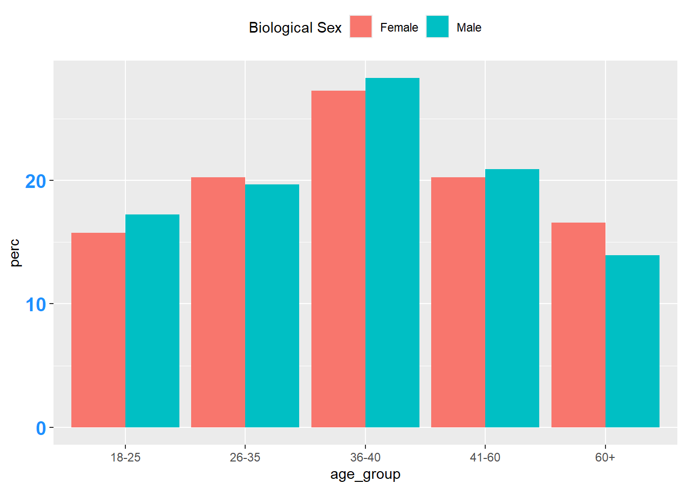
10.7 Putting It All Together: A Polished Bar Chart
Here I will do the following: * manually change the fill colors of the bars by using the type = c("color1", "color2", etc.) argument within the scale_fill_discrete() function. * move the legend to the bottom using the legend.position= argument within the theme() function * add axis titles and a plot title using the labs() function * alter the font for axes titles and subtext * add labels to the bars to show the percentages * stretch the y-axis up to 100% using the ylim() function
ggplot(data=age_within_sex_tbl, aes(x=age_group, y=perc, fill=biological_sex))+
geom_col( position=position_dodge()) +
scale_fill_manual(name="Biological Sex", values = c("#0072B2", "#E69F00")) +
labs(title= "Age Group Distribution by Biological Sex",
y= "Percentage (%)",
x = "Age Group") +
geom_text(aes(label=round(perc,1)), # add labels to bars
position=position_dodge(width=0.9), #have to make the labels side-by-side to align with bars
color = "#D55E00", # change label color
vjust=-0.25) + # moves text above bars (positive moves it into bars)
scale_y_continuous(limits = c(0, 100), expand = expansion(mult = c(0, .05))) +
theme_classic() +
theme(legend.position = "bottom",
axis.text.x = element_text(face="bold", size=11, color="slategray"),
axis.text.y = element_text(face="bold", size=11, color="slategray"),
axis.title.y = element_text(face="bold", size=13),
axis.title.x = element_text(face="bold", size=13))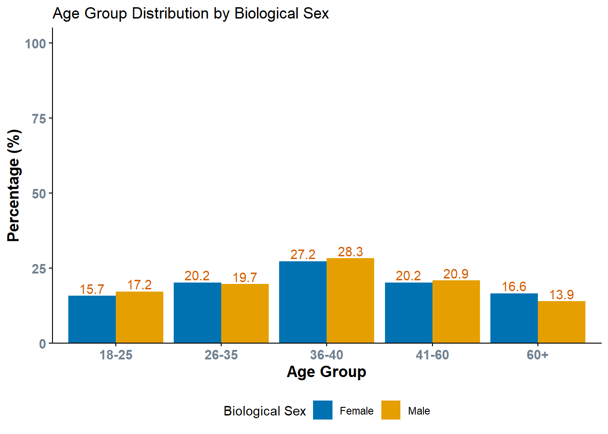
10.8 Other Geoms
There seem to be countless types of plots within ggplot2. I will not show you them. But again, here are the common geoms used:
- geom_bar()
- geom_histogram()
- geom_line()
- geom_point()
You can get inspiration to unlock R graph ideas here
10.9 Key Takeaways and Practice
A ggplot2 graph combines data, aesthetic mappings (aes()), and layers (geom_*()). Use geom_bar() to count raw observations and geom_col() when you have already calculated a numeric y value. Always check which group is used as the denominator when showing percentages.